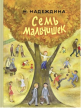

Мудрые и трогательные рассказы замечательной детской писательницы Надежды Надеждиной (1905-1992) - о той поре, когда многое происходит впервые и маленький человек только начинает осознавать своё место в жизни, принимать самостоятельные и очень важные решения, учится помогать близким и отвечать за слабых. Семь проникновенных историй об обыкновенных мальчишках, которым предстоит сделать свой первый нравственный выбор... Прекрасные рисунки известного художника Давида Штеренберга (1931-2014) очень точно иллюстрируют эту увлекательную и в то же время глубокую книгу. Читайте всей семьёй! Для младшего и среднего школьного возраста.